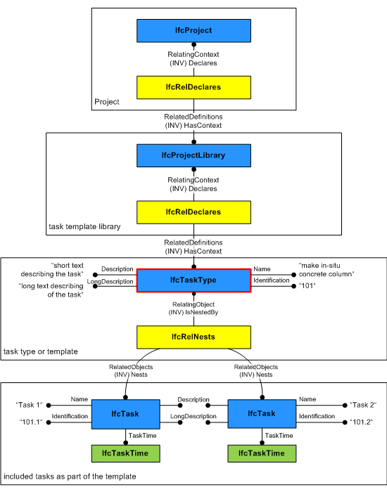
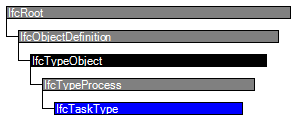

Natural language names
 | Aufgabe - Typ |
 | Task Type |
 | Type de tâche |
| Aufgabe - Typ |
| Task Type |
| Type de tâche |
| Item | SPF | XML | Change | Description | IFC2x3 to IFC4 |
|---|---|---|---|---|
| IfcTaskType | ADDED |
An IfcTaskType defines a particular type of task that may be specified for use within a work control.
HISTORY New entity in IFC4
An IfcTaskType provides for all forms of types of task that may be specified. It is a reference definition for a unit of work that may be broken down into (a sequence of) subtasks. Please note that a reference definition can not be part of a workflow definition, i.e. IfcTaskType instances define the most abstract level of a reference process without dependencies to other reference processes.
Usage of IfcTaskType defines the parameters for one or more occurrences of IfcTask. Parameters may be specified through property sets that may be enumerated in the IfcTaskTypeEnum data type or through explict attributes of IfcTaskType. Task occurrences (IfcTask entities) are linked to the task type through the IfcRelDefinesByType relationship.
Figure 131 shows the definition of a task type that is part of a task template library. Please note that in this example the task type is further subdivided into tasks that define task times (for example, duration) and/or a task sequence.
 |
Figure 131 — Task type relationships |
| # | Attribute | Type | Cardinality | Description | C |
|---|---|---|---|---|---|
| 10 | PredefinedType | IfcTaskTypeEnum | [1:1] | Identifies the predefined types of a task type from which the type required may be set. | X |
| 11 | WorkMethod | IfcLabel | [0:1] | The method of work used in carrying out a task. | X |
| Rule | Description |
|---|---|
| CorrectPredefinedType | The attribute ProcessType must be asserted when the value of PredefinedType is set to USERDEFINED. |

| # | Attribute | Type | Cardinality | Description | C |
|---|---|---|---|---|---|
| IfcRoot | |||||
| 1 | GlobalId | IfcGloballyUniqueId | [1:1] | Assignment of a globally unique identifier within the entire software world. | X |
| 2 | OwnerHistory | IfcOwnerHistory | [0:1] |
Assignment of the information about the current ownership of that object, including owning actor, application, local identification and information captured about the recent changes of the object,
NOTE only the last modification in stored - either as addition, deletion or modification. | X |
| 3 | Name | IfcLabel | [0:1] | Optional name for use by the participating software systems or users. For some subtypes of IfcRoot the insertion of the Name attribute may be required. This would be enforced by a where rule. | X |
| 4 | Description | IfcText | [0:1] | Optional description, provided for exchanging informative comments. | X |
| IfcObjectDefinition | |||||
| HasAssignments | IfcRelAssigns @RelatedObjects | S[0:?] | Reference to the relationship objects, that assign (by an association relationship) other subtypes of IfcObject to this object instance. Examples are the association to products, processes, controls, resources or groups. | X | |
| Nests | IfcRelNests @RelatedObjects | S[0:1] | References to the decomposition relationship being a nesting. It determines that this object definition is a part within an ordered whole/part decomposition relationship. An object occurrence or type can only be part of a single decomposition (to allow hierarchical strutures only). | X | |
| IsNestedBy | IfcRelNests @RelatingObject | S[0:?] | References to the decomposition relationship being a nesting. It determines that this object definition is the whole within an ordered whole/part decomposition relationship. An object or object type can be nested by several other objects (occurrences or types). | X | |
| HasContext | IfcRelDeclares @RelatedDefinitions | S[0:1] | References to the context providing context information such as project unit or representation context. It should only be asserted for the uppermost non-spatial object. | X | |
| IsDecomposedBy | IfcRelAggregates @RelatingObject | S[0:?] | References to the decomposition relationship being an aggregation. It determines that this object definition is whole within an unordered whole/part decomposition relationship. An object definitions can be aggregated by several other objects (occurrences or parts). | X | |
| Decomposes | IfcRelAggregates @RelatedObjects | S[0:1] | References to the decomposition relationship being an aggregation. It determines that this object definition is a part within an unordered whole/part decomposition relationship. An object definitions can only be part of a single decomposition (to allow hierarchical strutures only). | X | |
| HasAssociations | IfcRelAssociates @RelatedObjects | S[0:?] | Reference to the relationship objects, that associates external references or other resource definitions to the object.. Examples are the association to library, documentation or classification. | X | |
| IfcTypeObject | |||||
| 5 | ApplicableOccurrence | IfcIdentifier | [0:1] |
The attribute optionally defines the data type of the occurrence object, to which the assigned type object can relate. If not present, no instruction is given to which occurrence object the type object is applicable. The following conventions are used:
EXAMPLE Refering to a furniture as applicable occurrence entity would be expressed as 'IfcFurnishingElement', refering to a brace as applicable entity would be expressed as 'IfcMember/BRACE', refering to a wall and wall standard case would be expressed as 'IfcWall, IfcWallStandardCase'. | X |
| 6 | HasPropertySets | IfcPropertySetDefinition | S[1:?] |
Set | X |
| Types | IfcRelDefinesByType @RelatingType | S[0:1] | Reference to the relationship IfcRelDefinedByType and thus to those occurrence objects, which are defined by this type. | X | |
| IfcTypeProcess | |||||
| 7 | Identification | IfcIdentifier | [0:1] | An identifying designation given to a process type. | X |
| 8 | LongDescription | IfcText | [0:1] |
An long description, or text, describing the activity in detail.
NOTE The inherited SELF\IfcRoot.Description attribute is used as the short description. | X |
| 9 | ProcessType | IfcLabel | [0:1] | The type denotes a particular type that indicates the process further. The use has to be established at the level of instantiable subtypes. In particular it holds the user defined type, if the enumeration of the attribute 'PredefinedType' is set to USERDEFINED. | X |
| OperatesOn | IfcRelAssignsToProcess @RelatingProcess | S[0:?] | Set of relationships to other objects, e.g. products, processes, controls, resources or actors that are operated on by the process type. | X | |
| IfcTaskType | |||||
| 10 | PredefinedType | IfcTaskTypeEnum | [1:1] | Identifies the predefined types of a task type from which the type required may be set. | X |
| 11 | WorkMethod | IfcLabel | [0:1] | The method of work used in carrying out a task. | X |
Object Nesting
The Object Nesting concept applies to this entity.
IfcTaskType may nest other IfcTaskType or IfcTask entities using the IfcRelNests relationship. Such nesting indicates decomposed level of detail. Nesting of IfcTask entities is used if a task type shall be detailed by a sequence of tasks or if there is a need to include additional time information such as the duration of subtasks. Please note that IfcTask entities being contained within an IfcTaskType are linked with their task occurrences via IfcRelDefinesByObject relationships. It is also possible to define a task type for these IfcTask entities via IfcRelDefinesByType relationships. For further information please see the documentation of IfcRelDefinesByObject.
| # | Concept | Model View |
|---|---|---|
| IfcRoot | ||
| Software Identity | Common Use Definitions | |
| Revision Control | Common Use Definitions | |
| IfcTaskType | ||
| Object Nesting | Common Use Definitions | |
<xs:element name="IfcTaskType" type="ifc:IfcTaskType" substitutionGroup="ifc:IfcTypeProcess" nillable="true"/>
<xs:complexType name="IfcTaskType">
<xs:complexContent>
<xs:extension base="ifc:IfcTypeProcess">
<xs:attribute name="PredefinedType" type="ifc:IfcTaskTypeEnum" use="optional"/>
<xs:attribute name="WorkMethod" type="ifc:IfcLabel" use="optional"/>
</xs:extension>
</xs:complexContent>
</xs:complexType>
ENTITY IfcTaskType
SUBTYPE OF (IfcTypeProcess);
PredefinedType : IfcTaskTypeEnum;
WorkMethod : OPTIONAL IfcLabel;
WHERE
CorrectPredefinedType : (PredefinedType <> IfcTaskTypeEnum.USERDEFINED) OR ((PredefinedType = IfcTaskTypeEnum.USERDEFINED) AND EXISTS(SELF\IfcTypeProcess.ProcessType)) ;
END_ENTITY;
 Instance diagram
Instance diagram Link to this page
Link to this page